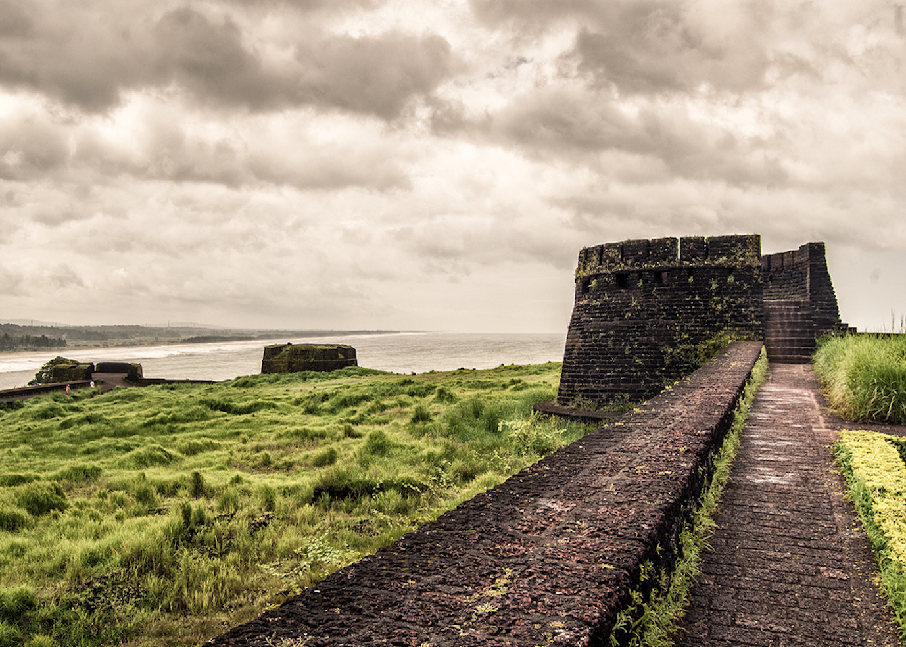
Kasaragod
The northern most district of Kerala, Kasaragod is situated on the sea coast bordered by hilly Kodagu and Mangalore districts of Karnataka in the east and north. Fishing is a prime source of livelihood along with the coir and handloom industries...eWith its unique natural and cultural attractions Kasaragod is known as the land of gods, forts, rivers, hills and beautiful beaches. The Bekal Fort, which stands on a 35 acre headland that runs into the Arabian Sea, is the largest and best preserved fort in the State.
Kannur
Kannur- The Land of Looms and Lores
Kannur is one among the northernmost districts in the south western state of Kerala in India. The old name 'Cannanore' is the anglicised form of the Malayalam word Kannur. Kannur might have derived its name from one of the the Hindu diety, Kannan (Lord Krishna) and Ur (place) making it the place of Lord Krishna. The deity of the Katalayi Sreekrishna temple was earlier situated in a shrine at Katalayi Kotta in the south eastern part of the Kannur town.
Kozhikkode
Formerly known as Calicut it is the legendary seaport where Vasco da Gama had first set his foot and discovered India. The area became a hot spot of commercial activity between Arab, Chinese, and East African traders and emerged as the most crucial region of the Malabar Coast. Other than its historical and commercial significance the destination is widely acclaimed for its idyllic settings serene beaches, panoramic countryside, wildlife sanctuaries, treasured museums, waterfalls, rivers, and hills. Kozhikode city is the prime marketing center for produce like coconut, pepper, rubber, coffee, lemongrass oil, cashew nuts, etc. Owing to its elaborate export network it has been named the noble emporium of India.
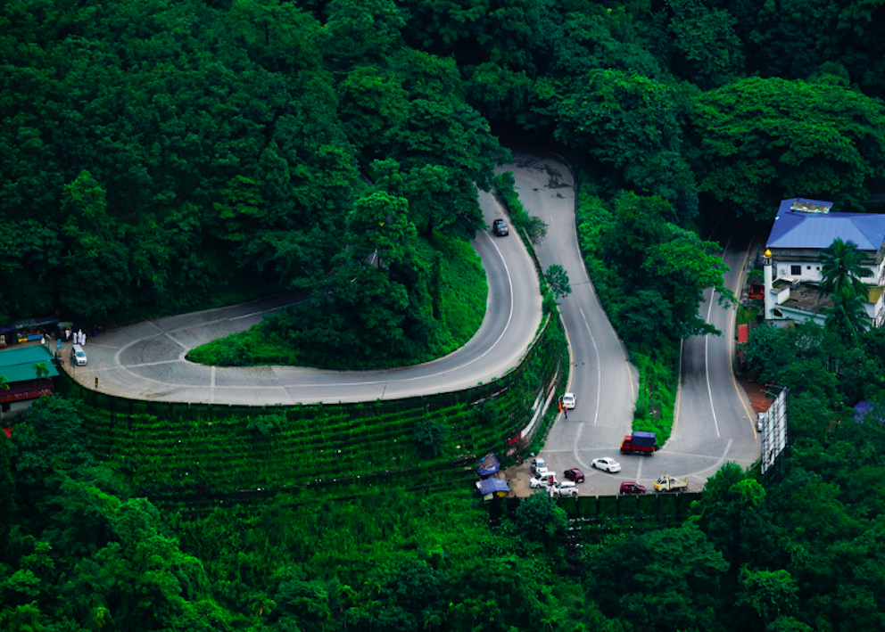
Wayanad
Wayanad is situated on the fringe of Tamil Nadu and Kerala. The whole area is totally green with sloping reaches and natural life incorporating Tholpetty in the North, Muthanga in the east circumscribing with Tamil Nadu, Kalpetta in the south, Mananthvadi in the north-west and Sultan Bathery (Sultan Battery) in the east.
In the east one can find the Wayanad Wildlife Sanctuary which is a rich, forested locale with regions of high elevation, home to creatures including Asiatic elephants, tigers, panthers, and egrets. In the Ambukuthi Hills toward the south, one can find beautiful Wayanad attractions like Edakkal Caves which contain antiquated petroglyphs, some going back to the Neolithic age.
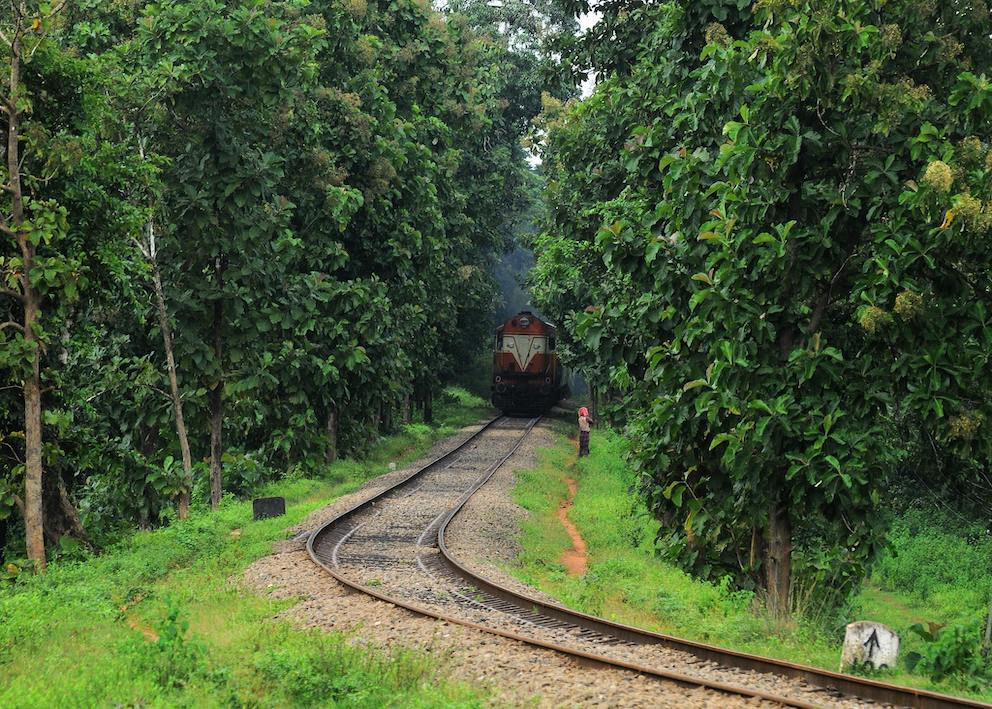
Malappuram
Apart from being a beautiful green addition on the map of God’s Own Country, Malapuram is a city that has seen an extensive history in the past and has developed through it.Be it the forest ranges of the city with coconut plantations, the river belt of Bharathapuzha, rainforests of Nedumkayam, the beauty of the river Challiyar, birds in Purathur, or the festive mood of the entire city throughout the year.
Malappuram is the perfect example of a wholesome treat and retreat for everyone who comes here to explore. Here is a detailed guide of all the best places to visit in Malappuram.
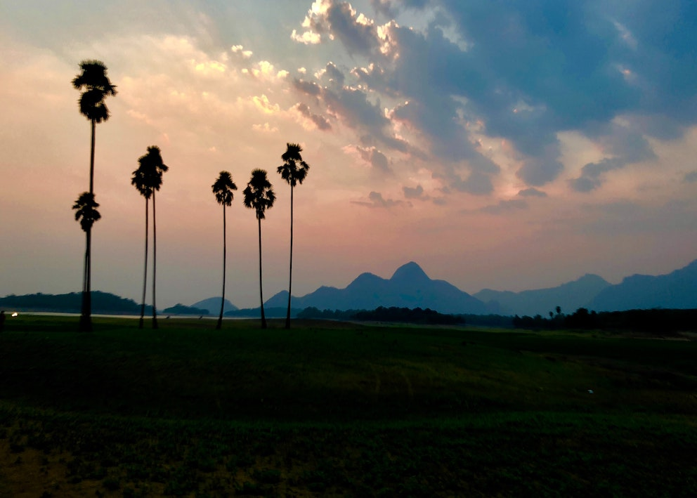
Palakkad
Situated in the foothills of Nilgiri, tourist places to visit in palakkad are filled with ancient architectures and natural wonders. Whether you are looking to spend some time alone, with friends or with family, this place offers you ample options to choose from and have the time of your life. From seeking blessings at the Jain temple of Jainimedu to wandering within the exotic wildlife of Silent valley National Park, it would not be wrong to say that there are many amazing places to visit in Palakkad.
Apart from historical structures and natural beauty, Palakkad has so much for your little ones too. If planning a family trip, places like Fantasy Park and Meenkara Dam will surely offer you a day filled with fun and enjoyment.
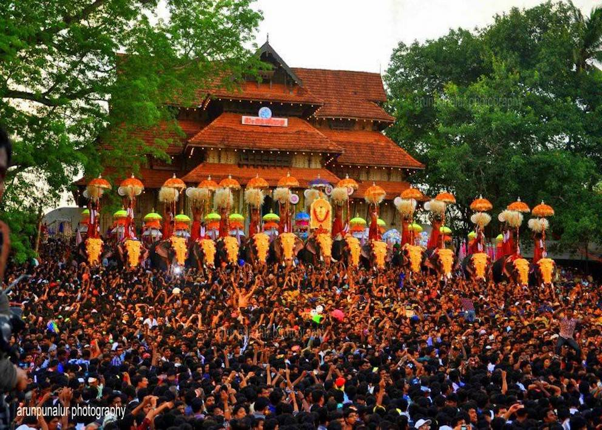
Thrissur
Thrissur is very well known for the many religious sites, temples, spiritual centres, and colourful celebrations during the festival season.
Built around a small hillock that spreads for about 65 acres called the Thekkinkadu Maidan, it can be said that the city is also built around the famous Vadakkumnathan temple, located on the hillock. This small city is known to be the cultural capital of Kerala, which is pretty evident in almost all of these interesting and amazing places to visit in Thrissur.
Apart from the religious side of the town, there are also a number of beaches, hillocks, forests, and waterfalls are wait for you when you arrive here. Take a look at this guide to know where to go on your trip to Thrissur in God’s Own Country, Kerala.
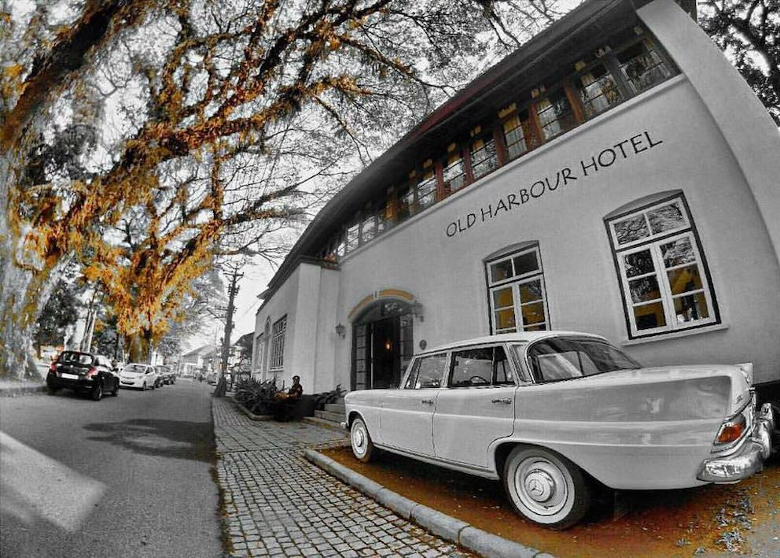
Eranakulam
There are plethora of Kochi tourist places that attract a large number of visitors every year mainly because of its unspoilt natural beauty. Fort Kochi, Willingdon Island, Bolgatty Island, Wonderla Amusement park, a Folklore museum and the Kerala Kathakali centre are a few of the prime tourist destinations in Kochi.
Kochi also offers the best Seafood cuisine cooked the traditional way of doing justice to the fresh catches of the day. An evening spent watching the traditional art forms of Kerala unleashing the rich culture of this state.
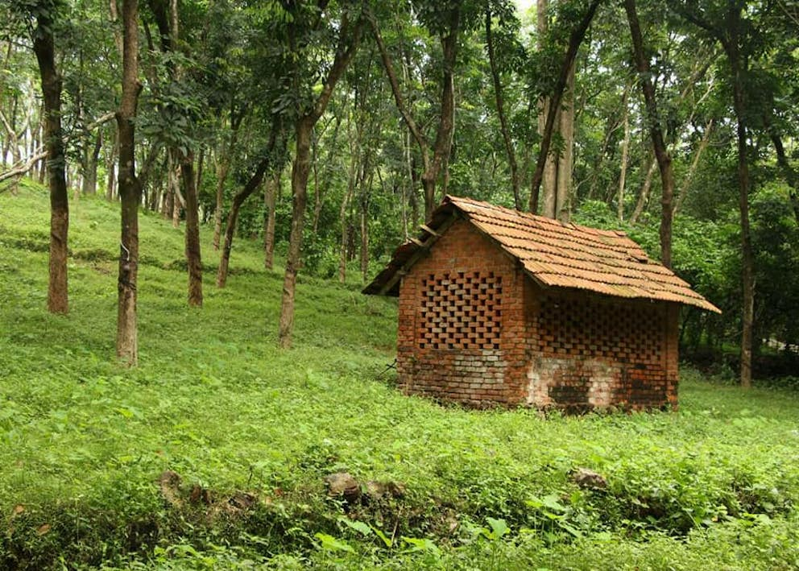
Kottayam
Kottayam is a city in the Indian state of Kerala. It is located in central Kerala and is also the administrative capital of Kottayam district. Bordered by the lofty and mighty Western Ghats on the east and the Vembanad Lake and paddy fields of Kuttanad on the west, Kottayam is a land of unique characteristics. Panoramic backwater stretches, lush paddy fields, highlands, hills and hillocks, extensive rubber plantations, places associated with many legends and a totally literate people have given Kottayam District the enviable title: The land of letters, legends, latex and lakes.
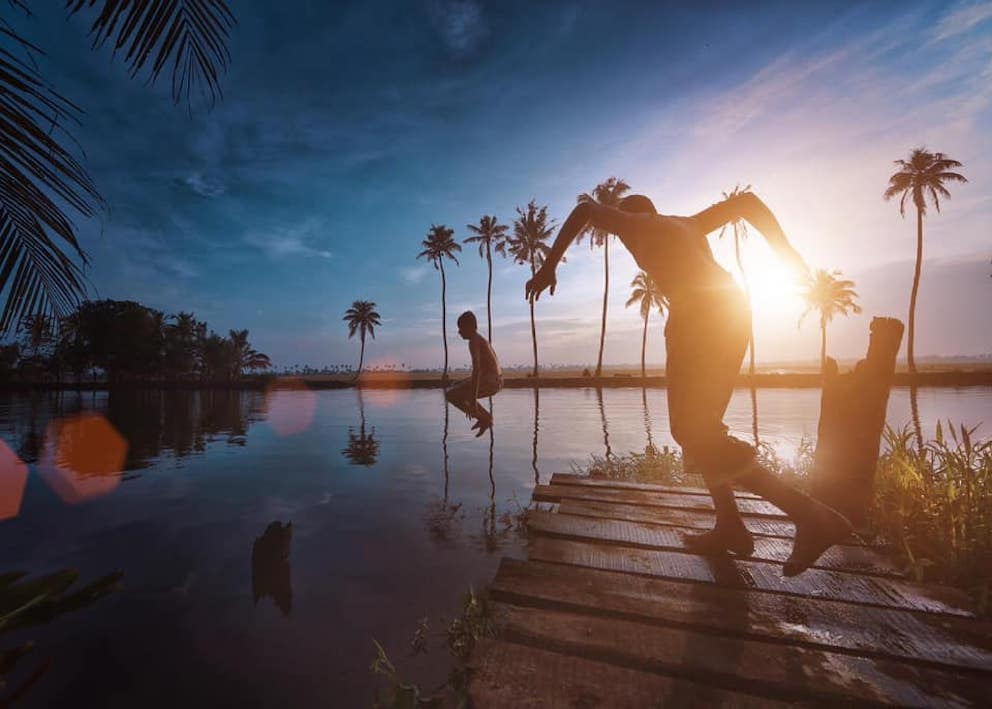
Alappuzha
Places to visit in Alleppey: Kumarakom Bird Sanctuary, Vembanad Lake, Mannarasala Temple, Ambalapuzha Temple, St. Andrew's Forane Church, Pathiramanal, Pandavan Rock, Edathua Church, etc.
There is a diversity among the many places to visit in Alleppey, from the rewarding sight of the sea to the wriggling inlets of backwaters and jungle streams- No wonder Alleppey was called the “Venice of the east” by Lord Curzon. The concept of houseboats which is locally called Kettuvallam in Malayalam is a primitive practice in Kerala.
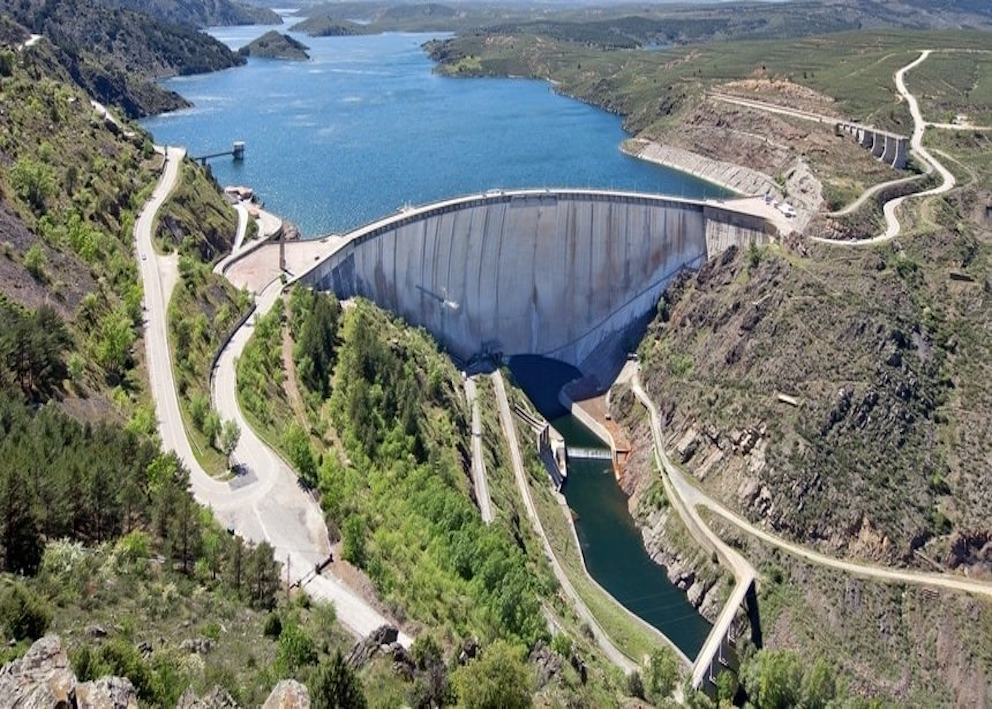
Idukki
To the humankind lost in the concrete jungle, Idukki tourist places acquaints them with the splendor of nature and God’s magnificent creation. Idukki, one of the quaintest districts of Kerala, is home to a number of prominent tourist places.
The district, which lies in the Western Ghats of Kerala, is topographically known for its rocky terrain and varied verdant vegetation. Places in Idukki is full of cliffs, lush greenery, lagoons, tranquil rivers and cascading waterfalls that hypnotize the tourists and leave them with everlasting memories. Having names of Painavu, arch dam, poonchira, Idukki shows a variety in its attractions.
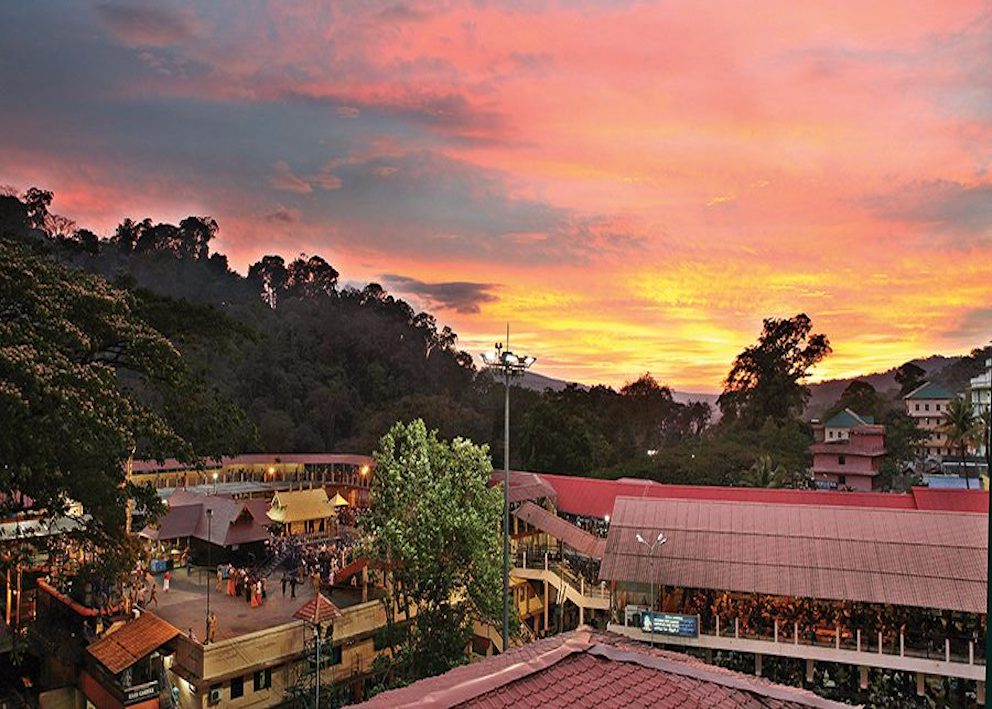
Pathanamthitta
Pathanamthitta district is known as the 'Headquarters of Pilgrimage Tourism', of the Kerala State. Situated near the Western Ghats and bordered by the hills, Pathanamthitta district is a treat to eyes with its vast unending stretches of forests, rivers and rural landscapes. Blessed by nature, the district is famous for its scenic beauty, fairs and festivals
 Kollam
Kollam
The spectacular places to see in Kollam are so diverse that it’s arduous to explore all at one go. Adored with sea, lakes, plains, mountains, rivers, backwaters, forest, vast green fields, etc this city has been on the route map for a breath-easy vacation. Kollam is a place that will fascinate you with its picturesque beauty, spectacular landscape, culture and tradition.
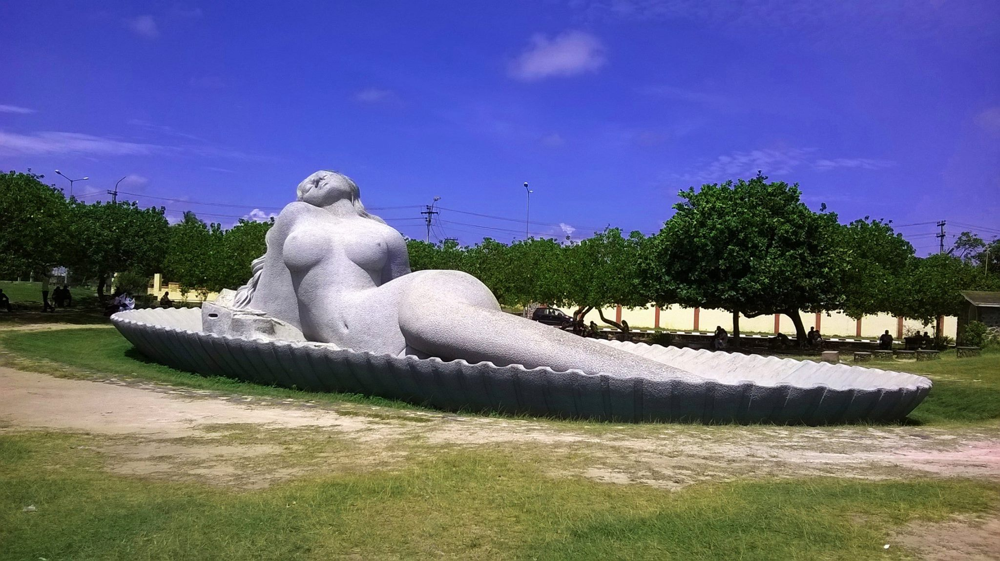
Thiruvananthapuram
There is no second speculating that one can investigate a portion of the best tourist places in Trivandrum, considering that this state only the most went to capital of India. Bordered by Arabian Sea in the west and the condition of Tamil Nadu in east, Trivandrum is a perfect destination for visitors in India. The long sandy shorelines, lush good countries, pleasant shorelines and a rich social legacy engross both household and outside guests. This spot, which is otherwise called Thiruvananthapuram is honoured with a few verifiable joys too. The city is an immaculate mix of appealing scene and fascinating history and society.